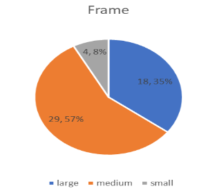

Hear are the qualitative & quantitative data:
These are the data for the two things that should be considered the most when it comes to this research.
Descriptive statistics of glycosylated hemoglobin (Quantitative variable):

Pie chart of frame (Qualitative variable):



By: Dominic Bernard B. Deomampo (For inquiries please email: dominicbernard.deomampo@smc.pshs.edu.ph)